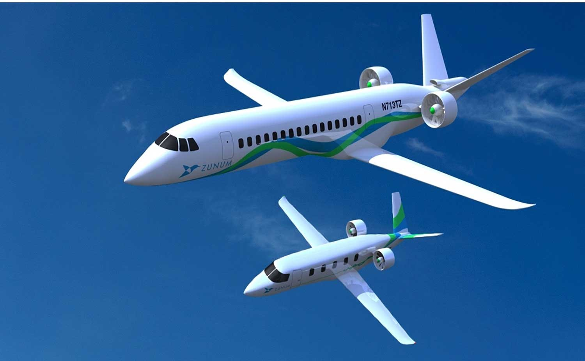

Airlines’ annual payment processing cost hits $25bn

Airlines spend more than $24.5bn annually processing payments, according to the International Air Transport Association (IATA), which said the cost underscores the financial pressures facing carriers as they adopt digital technologies. Sandrine Le Borgne, IATA’s interim Director General, Chief Financial Officer and Senior Vice-President for Corporate Services, raised the issue at the opening of the association’s World Financial Symposium and World Passenger Symposium in Macao on Wednesday.
Le Borgne said airlines need to ensure that digital wallets, artificial intelligence and biometric identification do more than make travel more convenient. Their adoption should also reduce costs, simplify operations and support financial resilience. IATA said AI assistants and automated agents could change how passengers search for, compare and buy travel services, but carriers need to retain control of their data, commercial relationships and the information used to sell their services.
The association pointed to the Offers and Orders framework as a central part of the shift to modern airline retailing. Seven airlines are already using or implementing Orders, and more than 20 others are expected to follow from 2027. Technology providers have committed more than $1.7bn to Offers and Orders, IATA said, describing the framework as a basis for retailing that AI could help accelerate.
IATA also urged airlines to include reconciliation, settlement and revenue accounting in digital transformation from the outset, rather than simply converting existing processes to digital formats. New payment methods may give customers more choice, but they can also affect transaction costs, cash flow and financial risk, the association said.
Biometrics and digital travel credentials could make airport procedures faster and more convenient, but IATA said their benefits are constrained because many systems operate only within particular airports or countries. That fragmentation can prevent passengers from having a consistent experience across international journeys.
Source: Punch